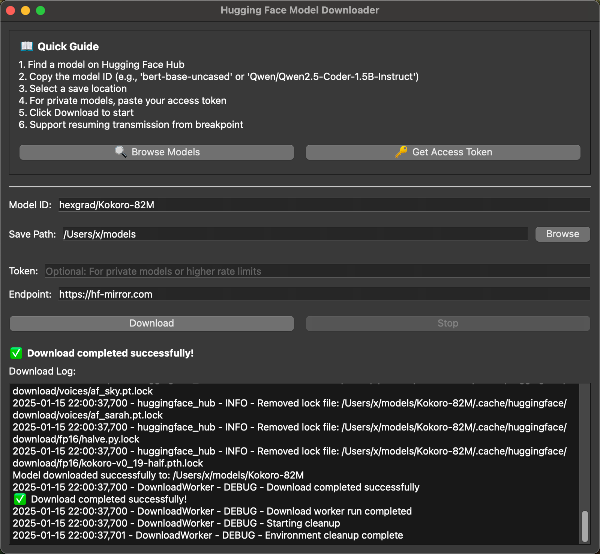

hf-model-downloader
Downloads models from Hugging Face and ModelScope. Has a GUI so you don't need to mess with command lines.



What it does
- Downloads Hugging Face and ModelScope models through a simple GUI
- Handles authentication tokens
- Shows download progress
- Works on Windows, macOS, Linux
- Creates standalone apps you can just run
Just want to use it?
Download from releases. Run the app. Done.
Development
git clone https://github.com/samzong/hf-model-downloader.git
cd hf-model-downloader
# Modern way (recommended)
uv sync
uv run main.py
Build
# Build the application
make build
# Create DMG package (macOS only)
make dmg
# Clean build artifacts
make clean
Code Quality
# Format code
make format
# Check code quality
make lint
# Auto-fix issues
make lint-fix
# Run format + lint + build
make check
Release
# Preview next version
make release-dry-run
# Create release (main branch only)
make release
See all available commands:
make help
License
Under the MIT License - see the LICENSE.